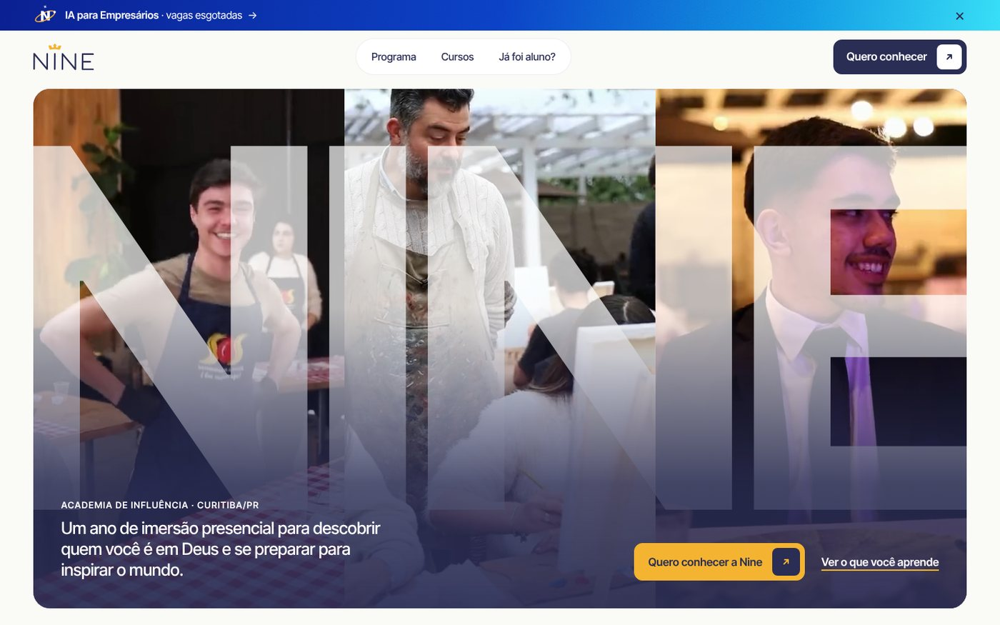
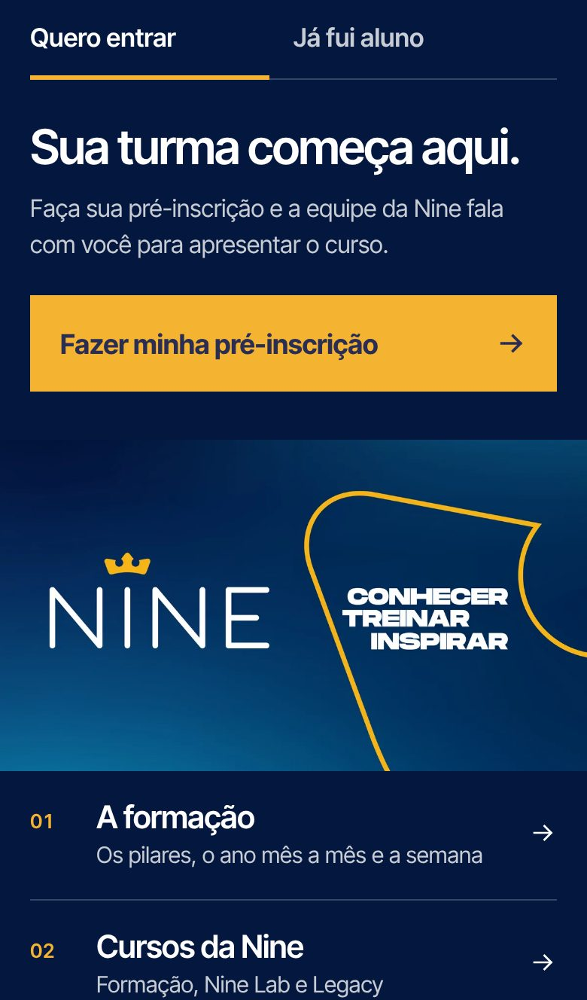
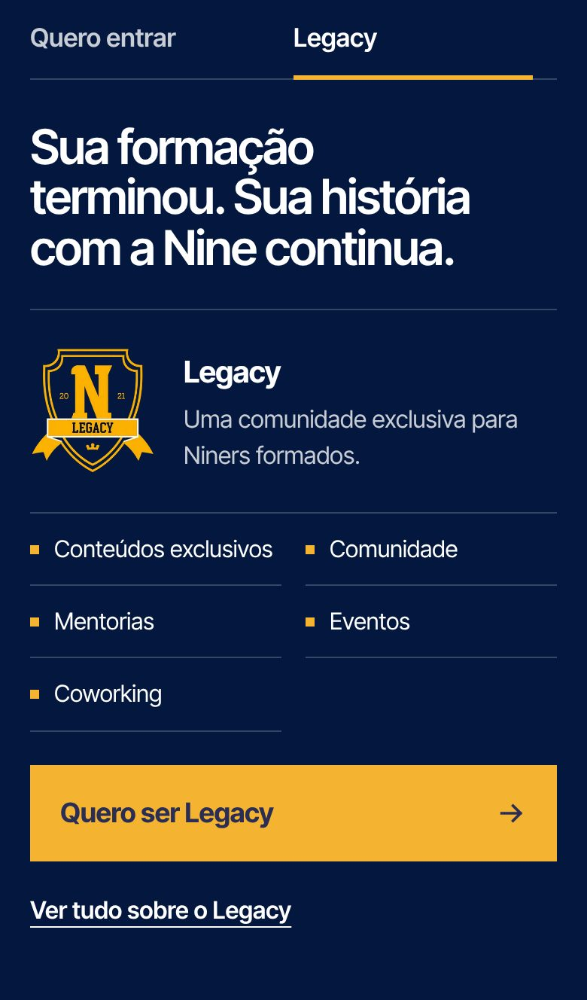

O site da Nine está no ar.
O site, a velocidade, o link na bio e como o código chega até vocês para hospedar no endereço da Nine.
nineformacao.vercel.appParaNine Academia de Influência
DeBoop
Data13/11/2026
O site, a velocidade, o link na bio e como o código chega até vocês para hospedar no endereço da Nine.
nineformacao.vercel.app1 · O site
O site já pode ser visto no endereço de testes nineformacao.vercel.app. É exatamente o que vai para o endereço da Nine; só o domínio muda.

| Endereço | O que tem |
|---|---|
| / | A formação: para quem é, os três pilares, a grade, o ano mês a mês, a semana, equipe, depoimentos e dúvidas. |
| /cursos/ | Todos os cursos, com o status de cada um. |
| /cursos/ia-para-empresarios/ | IA para Empresários, Nine Lab 2026. |
| /legacy/ | Legacy, para ex-alunos. |
| /pre-inscricao/ | Pré-inscrição em página própria (os botões do site abrem o mesmo formulário numa janela). |
| /links/ | Link na bio do Instagram. |
Conteúdo real do Manual do Aluno e da Apresentação 2026.
Celular pensado à parte: abas, calendário e semana próprios para a tela pequena.
Formulários da Ummense: abrem na hora, na própria página, e as respostas caem direto na conta da Nine.
Acessível (padrão WCAG AA), com as cores oficiais do manual de marca.
2 · Velocidade e qualidade
Medimos as seis páginas no ar com o Lighthouse, a mesma ferramenta do PageSpeed Insights do Google, no celular e no computador. O site passou nos quatro critérios.
Abre rápido, até no 4G do celular. As imagens se adaptam ao tamanho da tela e as animações só carregam depois que a página aparece.
Funciona com leitor de tela e só com o teclado, com contraste certo entre texto e fundo.
Seguro, com HTTPS e sem erros no navegador.
Títulos, descrições e estrutura prontos para o Google entender e mostrar o site.
O formulário de pré-inscrição é da Ummense e é pesado. Para não fazer ninguém esperar, ele começa a carregar escondido assim que a pessoa toca ou mexe na página. Ao clicar em "Quero conhecer", ele abre numa janela na própria página, já pronto. O mesmo vale para o "Quero ser Legacy".
Para conferir quando quiserem: abram pagespeed.web.dev e colem o endereço da página.
3 · Link na bio
Uma página com a identidade da Nine, no próprio site. Quem chega pelo Instagram escolhe entre entrar na próxima turma ou, se já foi aluno, conhecer o Legacy.


| Endereço | Quando usar |
|---|---|
| nineformacao.vercel.app/links/ | Hoje, enquanto o site está no endereço de testes. |
| 9ai.com.br/links/ | Depois que o domínio apontar para o site novo: é este que vai na bio do Instagram. |
| …/links/#ex-alunos | Abre direto na aba do Legacy. Bom para stories e mensagens para ex-alunos. |
Os botões de YouTube e Flickr já estão prontos e aparecem assim que vocês mandarem os endereços.
4 · Como o site chega até vocês
O site é feito só de arquivos: páginas, imagens e o código de cada página. Não precisa de banco de dados, de servidor especial nem de nenhuma instalação. Por isso ele roda em qualquer hospedagem.
Um arquivo nine-site.zip, por link de download, com a pasta completa e um guia de publicação (LEIA-ME.md) para quem for colocar no ar. Se a equipe técnica de vocês usar GitHub, também podemos transferir o repositório, com todo o histórico, para a conta da Nine.
Pode ser a hospedagem que a Nine já usa ou uma nova. Nossa recomendação continua sendo a Vercel, onde o site roda hoje.
A pasta inteira vai na raiz do endereço (9ai.com.br/, não 9ai.com.br/site/), com HTTPS ligado.
No painel do domínio (registro.br ou onde o 9ai.com.br estiver), troca-se o apontamento do site para a nova hospedagem. A hospedagem informa os valores.
Abrir as seis páginas no novo endereço, enviar uma pré-inscrição de teste e conferir se chegou na Ummense. Depois, colocar 9ai.com.br/links/ na bio.
Mudem só os registros do site (tipo A ou CNAME). Os registros MX são os do e-mail (contato@9ai.com.br e secretaria@9ai.com.br) e devem ficar como estão. Deixem o site atual no ar até o novo estar conferido.
5 · Hospedagem
public_html.Depois que o endereço final estiver definido
| Avisar a Boop | Com o domínio definido, ajustamos o endereço final nas páginas (imagem de compartilhamento no WhatsApp e redes, e o mapa do site para o Google). |
| Alterações | Pedidos de ajuste no site continuam com a Boop, pelo canal de sempre. |
Próximos passos